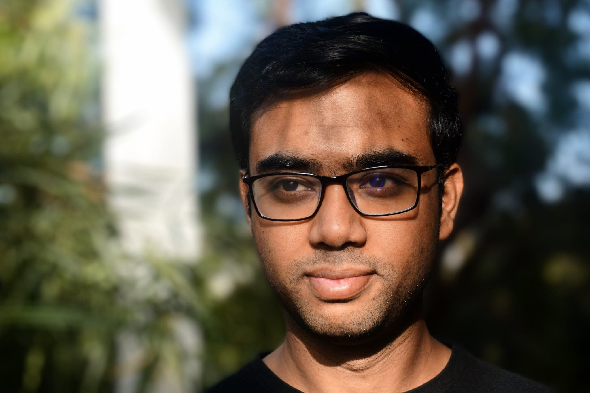

Hi and welcome to my website!
I am a postdoctoral scholar working with Prof. Andrej Sali at UCSF. I develop Bayesian inference based methods to improve integrative structure determination of protein complexes using the software framework IMP. Application areas constitute chromosomal maintenance proteins and DNA helicases.
I also work closely with the Pancreatic Beta Cell Consortium (PBCC), which is a large cross-functional team of experimentalists and modelers across the US west (UCSF, USC, UCLA, Scripps, Salk) and the east (Rutgers) coasts, Montreal (Universite de Montreal) and Sanghai (iHuman Institute at SanghaiTech), committed to studying beta cell biology. As part of the consortium, I use Bayesian networks to build integrative models of glucose induced insulin secretion which may contribute to better understanding the role of cellular enzymatic pathways and their impairments to type-II diabetes.
I completed my PhD in Chemical Engineering with a minor in Computational Science and Engineering from UCSB in 2018, supervised by Prof. M. Scott Shell. In my thesis, I developed novel coarse-grained models of liquid mixtures, polymers and protein folding for efficient (~30-100 times faster than detailed atomistic representation) molecular dynamics (MD) simulations using variational inference techniques.
Please feel free to reach out, if you have questions or comments about my research or want to collaborate.